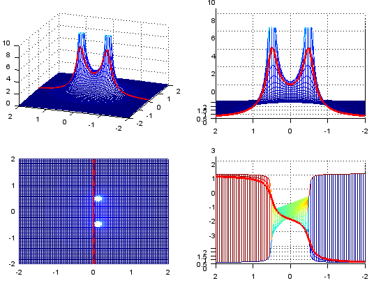
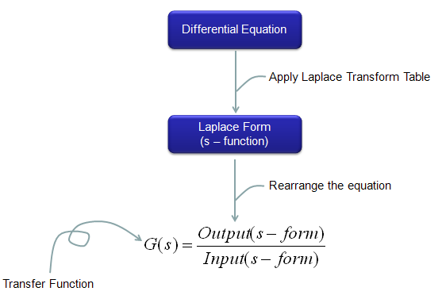

Laplace Transform Home : www.sharetechnote.com
Laplace transform is one of the important sections of any Engineering Mathematics course. But if you don't understand what Laplace transform is and how it helps us to solve many engineering problems, it would just seem to you as one of the many things that seems to be designed just to make your school life difficult and miserable -:).
- What is Laplace Transform ?
- Why Laplace Transform ?
- Laplace Transform Table
- Can we use Laplace Transform for Any kind of Differential Equation ?
- Graphical Presentation of Laplacian Form
- Examples
- Transfer Function
- Transfer Function of Mechanical Systems (Modeling Mechnical System in Laplace Form)
- Spring
- Damper
- Mass
- Spring-Mass
- Spring-Damper
- Spring-Mass-Damper
- Tortion Bar
- Tortion Damper
- Rotational Inertia
- Transfer Function to State Space Matrix
What is Laplace transform ? The mathematical definition of the Laplace transform is as follows. Don't get disappointed even if you don't understand the real meaning of this transform. I put this mathematical definition as a kind of cheatsheet in case when you may feel like looking at this and trying to draw any possible meaning out of this definition.
Just as a small hints for your future trial : You are looking at the two very important components of engineering math that I dealt in my side. One of the component you see is "Sum of Times" and the other component is "Exponential" form. If you dig further into Laplace Transform, you would learn the laplace variable 's' is complex number. Now you see another very important component of Mathematics which is 'complex number'. Just give it a try to understand the meaning of this transformation from what you intuitively understood from the section of 'Sum of Times', 'exponential form', 'complex numbers'.
Probably this section would be more important to most of the readers than the mathematical definition of the Laplace Transform.
My understanding (or many other understandings from other text books) would be as follows. As I mentioned in many other pages, the start point of using mathematics in engineering is to describe a real world problem into various mathematical forms. One of the mathematical forms that is most commonly used would be "Differntial Equation". As you may feel if you did Modeling using Differential Equations, you would have felt "Differential Equation would be an handy tool for DESCRIBING the real life problems, but not that easy to FIND SOLUTION from it".
Laplace Transform can be a very handy tools to help you FIND SOLUTION from a differential equation. If you transform a differential equation into a Laplace form, the transformed form became an Algebraic form from which even a junior high school student can get the solution. Simply put, Laplace Transform is a mathematical tool that can convert various differential equations into a form that even a junior high school student can solve.
Once you get the solution using the Laplace Transform, you normally have to go through "Inverse Laplace Transform" to express the solution in more meaningful format in the real life problem.
This overal process of how Laplace transform is being used can be illustrated as follows. I put three different diagram as follows.
First, many of our real life problems are described in the form of Differential Equations. You can use any kind of "Solution Process" to solve the differential equations.
As I mentioned, Laplace Transform is only a kind of "Solution Process" for a differential equation illustrated as below. (For now, let's ignore of 'z-transform' part.)
Following is just a simplified form of illustration shown above. Of course, you can draw you own diagram based on your own understanding.
Can we use Laplace Transform for Any kind of Differential Equation ?
What do you think the answer is ? Unfortunately the answer is "No". Laplace Transform cannot be a solution for any kind of differntial solution. The form of Differential Equation you can solve using Laplace Transform is "Linear Differential Equation".
Do I always have to use Laplace Transform to solve a Differntial Equation ?
There is nothing "MUST" with this. As I mentioned, Laplace Transform is invented to HELP you to solve a problem. If you don't feel it is not helping you at all. You can just stick to whatever you would think is easy for you. As a matter of fact, in many text book example (the examples even in this page) they shows pretty simple differential equations for Laplace Transform. For these examples, you may get the feeling "Why do I have to go through this additional process.. I already know the solution for this differential equation without using Laplace Transform". I agree, at least I would have the same feeling as yours for most of the textbook example problems.
But there are many cases where it became easier to Lapalace Transform than trying to solve the differential equations as it is.
We already saw the mathematical definition of the Laplace transform at the beginning of this page, but it is not easy to solve a differential equation purely based on the definition of the Lapalce Transform. If it is the case, you would not use Laplace Transform because the transformation process would be thought more complicated than solving the differential equation as it is. Fortunately, many mathemticians and engineers have done a lot of research and found the laplace form of expression for almost any components we see in various differential equation. Following is a table showing the laplace form of many mathematical components we normally see in various differential equation. I would say this is a kind of minimum sized table. You would see much longer table from various text book or many other sources you can google.
Performing the Laplace Transform is like a translating a sentence from a language to another language. When you have a differential equation, just split (or rewrite) the original differential equations into a set of small forms (words). And find the laplace form from the table (a kind of dictionary) corresponding components of the original equation. Look at the example at the end of this page or the examples from your text books.
Graphical Representation of Laplacian Form
In many cases, you would get as a result of modeling your system (e.g, Transfer function of a Control System, Filter etc) a polynomials or rational functions of the laplace parameter 's'.
Except that unfamilar character 's', those polynomial and rational equations would be very similar to what you saw in your junior/senior high school math. But the interpretation of those equations would not be as straightforward/simple as it was with those equations in your high school math.
The difficulties come from the fact that the one you saw in high school math is using a real number and the equations with laplace parameter is using complex number. We haven't been trained much about plotting a function with complex variable. Even calculation of the equation is not easy and almost impossible to calculate those plotting points by hand.
But you don't have to worry about the calculation and even plotting the result since there are many softwares with which you can do this (e.g, Matlab/Octave, Mathematica, Maple etc).
As the first example, let's assume that you have the following function. This is a complex function in which the independent variable "s" is a complex number.
I would not explain much about how these plots are drawn since it would be better for you to work through the Matlab/Octave source code following the plot. (I intentionally does not try to use any complicated programming component and tried to write the script as much straightforward as possible. In terms of programming, it may not be an efficient code, but I try to make it more readable with minimum knowledge of the language.)
In this example, the variable a1 and b1 in the script is the two components of constituting the constant p in the following equation. Try change a1 and b1 in various values and see how these plot changes.
Just quick question assuming that you already played with the script and had some intuitive understanding of the following function. How the constant 'p' affect the result of the function ?
Maybe my question is not so clear. I didn't know example how I should ask. Have you noticed that the 'p' is the point where the result (magnitude) of this function (dependent variable) become very large (infinite number) ? If you noticed this, I think you have proper understanding of this function.
The thick redline in the graph has also very important meaning. It is the points where only imaginary component of 's' exists, no real part. The imaginary part of 's' is converted to be 'jw', where 'w' represents 'frequency'. Therefore, this thick red line represents the frequency response of the function.
re = -2:.05:2; im = -2:.05:2;
a1 = -0.5;
b1 = 0.5;
[X,Y] = meshgrid(re,im);
s = (X + Y*j);
s_jw = (0 + Y*j);
p1 = a1 + b1*j;
Zabs = abs(1 ./ (s .+ p1 ));
Zarg = arg(1 ./ (s .+ p1 ));
Zw = abs(1 ./ (s_jw .+ p1));
Zwarg = arg(1 ./ (s_jw .+ p1));
zmax = 10;
subplot(2,2,1); mesh(X,Y,Zabs);axis([re(1) re(end) im(1) im(end) 0 zmax]);
hold on;
plot3(X.*0,Y,Zw, 'linewidth',3,'color','r');
hold off;
view(-70,30);
subplot(2,2,2); mesh(X,Y,Zabs);axis([0 re(end) im(1) im(end) 0 zmax]);
hold on;
plot3(X.*0,Y,Zw, 'linewidth',3,'color','r');
hold off;
view(-90,10);
subplot(2,2,3); mesh(X,Y,Zabs);axis([re(1) re(end) im(1) im(end) 0 zmax]);
hold on;
plot3(X.*0,Y,Zw, 'linewidth',3,'color','r');
hold off;
view(0,90);
subplot(2,2,4); mesh(X,Y,Zarg);axis([0 re(end) im(1) im(end) -pi pi]);
hold on;
plot3(X.*0,Y,Zwarg, 'linewidth',3,'color','r');
hold off;
view(-90,10);
Next example is plotting the following function. In this function, you will get two points where the magnitude of the function become infinite. We say "This function has two poles".
See how the plot changes when you change a1,b1 and a2,b2. Especially how the shape of the thick red line changes as you change the values.

re = -2:.05:2; im = -2:.05:2;
a1 = -0.125;
b1 = 0.5;
a2 = -0.125;
b2 = -0.5;
[X,Y] = meshgrid(re,im);
s = (X + Y*j);
s_jw = (0 + Y*j);
p1 = a1 + b1*j;
p2 = a2 + b2*j;
Zabs = abs(1 ./ ((s .+ p1) .* (s .+ p2)) );
Zarg = arg(1 ./ ((s .+ p1) .* (s .+ p2)) );
Zw = abs(1 ./ ((s_jw .+ p1).*(s_jw .+ p2)) );
Zwarg = arg(1 ./ ((s_jw .+ p1).*(s_jw .+ p2)) );
zmax = 10;
subplot(2,2,1); mesh(X,Y,Zabs);axis([re(1) re(end) im(1) im(end) 0 zmax]);
hold on;
plot3(X.*0,Y,Zw, 'linewidth',3,'color','r');
hold off;
view(-70,30);
subplot(2,2,2); mesh(X,Y,Zabs);axis([0 re(end) im(1) im(end) 0 zmax]);
hold on;
plot3(X.*0,Y,Zw, 'linewidth',3,'color','r');
hold off;
view(-90,10);
subplot(2,2,3); mesh(X,Y,Zabs);axis([re(1) re(end) im(1) im(end) 0 zmax]);
hold on;
plot3(X.*0,Y,Zw, 'linewidth',3,'color','r');
hold off;
view(0,90);
subplot(2,2,4); mesh(X,Y,Zarg);axis([0 re(end) im(1) im(end) -pi pi]);
hold on;
plot3(X.*0,Y,Zwarg, 'linewidth',3,'color','r');
hold off;
view(-90,10);
Following is more general form. You would notice that numerator is not "1" any more. p1,p2 is the points called 'poles' where the result (magnitude) of the function goes infinite and z1,z2 is the points called 'zeros' where the result (magnitude) of the function goes to 0. But in this type of graph, the points for zeros would not be outstanding (You will see how to improve these in following example).
re = -2:.05:2; im = -2:.05:2;
p_a1 = -0.125;
p_b1 = 0.5;
p_a2 = -0.125;
p_b2 = -0.5;
z_a1 = 0.5;
z_b1 = 0.0;
z_a2 = 2.0;
z_b2 = 0.0;
[X,Y] = meshgrid(re,im);
s = (X + Y*j);
s_jw = (0 + Y*j);
p1 = p_a1 + p_b1*j;
p2 = p_a2 + p_b2*j;
z1 = z_a1 + z_b1*j;
z2 = z_a2 + z_b2*j;
Zabs = abs(((s .+ z1) .* (s .+ z2)) ./ ((s .+ p1) .* (s .+ p2)) );
Zarg = arg(((s .+ z1) .* (s .+ z2)) ./ ((s .+ p1) .* (s .+ p2)) );
Zw = abs(((s_jw .+ z1) .* (s_jw .+ z2)) ./ ((s_jw .+ p1) .* (s_jw .+ p2)) );
Zwarg = arg(((s_jw .+ z1) .* (s_jw .+ z2)) ./ ((s_jw .+ p1) .* (s_jw .+ p2)) );
zmax = 20;
subplot(2,2,1); mesh(X,Y,Zabs);axis([re(1) re(end) im(1) im(end) 0 zmax]);
hold on;
plot3(X.*0,Y,Zw, 'linewidth',3,'color','r');
hold off;
view(-70,30);
subplot(2,2,2); mesh(X,Y,Zabs);axis([0 re(end) im(1) im(end) 0 zmax]);
hold on;
plot3(X.*0,Y,Zw, 'linewidth',3,'color','r');
hold off;
view(-90,10);
subplot(2,2,3); mesh(X,Y,Zabs);axis([re(1) re(end) im(1) im(end) 0 zmax]);
hold on;
plot3(X.*0,Y,Zw, 'linewidth',3,'color','r');
hold off;
view(0,90);
subplot(2,2,4); mesh(X,Y,Zarg);axis([0 re(end) im(1) im(end) -pi pi]);
hold on;
plot3(X.*0,Y,Zwarg, 'linewidth',3,'color','r');
hold off;
view(-90,10);
The simplest way to make both Zeros and Poles outstanding is just to plot it in log scale as follows.
re = -2:.05:2; im = -2:.05:2;
p_a1 = -0.125;
p_b1 = 0.5;
p_a2 = -0.125;
p_b2 = -0.5;
z_a1 = 0.5;
z_b1 = 0.0;
z_a2 = 1.5;
z_b2 = 0.0;
[X,Y] = meshgrid(re,im);
s = (X + Y*j);
s_jw = (0 + Y*j);
p1 = p_a1 + p_b1*j;
p2 = p_a2 + p_b2*j;
z1 = z_a1 + z_b1*j;
z2 = z_a2 + z_b2*j;
Zabs = abs(((s .+ z1) .* (s .+ z2)) ./ ((s .+ p1) .* (s .+ p2)) );
Zabs = 10 * log10(Zabs);
Zarg = arg(((s .+ z1) .* (s .+ z2)) ./ ((s .+ p1) .* (s .+ p2)) );
Zw = abs(((s_jw .+ z1) .* (s_jw .+ z2)) ./ ((s_jw .+ p1) .* (s_jw .+ p2)) );
Zw = 10 * log10(Zw);
Zwarg = arg(((s_jw .+ z1) .* (s_jw .+ z2)) ./ ((s_jw .+ p1) .* (s_jw .+ p2)) );
zmax = 15;
subplot(2,2,1); mesh(X,Y,Zabs);axis([re(1) re(end) im(1) im(end) -zmax zmax]);
hold on;
plot3(X.*0,Y,Zw, 'linewidth',3,'color','r');
hold off;
view(-30,15);
caxis([-zmax zmax]);
colormap(hsv(20));
subplot(2,2,2); mesh(X,Y,Zabs);axis([0 re(end) im(1) im(end) -zmax zmax]);
hold on;
plot3(X.*0,Y,Zw, 'linewidth',3,'color','r');
hold off;
view(-90,10);
caxis([-zmax zmax]);
colormap(hsv(20));
subplot(2,2,3); mesh(X,Y,Zabs);axis([re(1) re(end) im(1) im(end) -zmax zmax]);
hold on;
plot3(X.*0,Y,Zw, 'linewidth',3,'color','r');
hold off;
view(0,90);
caxis([-zmax zmax]);
colormap(hsv(20));
subplot(2,2,4); mesh(X,Y,Zarg);axis([0 re(end) im(1) im(end) -pi pi]);
hold on;
plot3(X.*0,Y,Zwarg, 'linewidth',3,'color','r');
hold off;
view(-90,10);
Example 1 : y'(t) + y(t) = u(t), y(0) = 0
Step 1 : Find Laplace form for each terms of the equation from Laplace Transform Table
y'(t) ---> s Y(s) - y(0) = s Y(s) because we defined y(0) = 0 in this example
y(t) --> Y(s), this is definition of Laplace Transform
u(t) --> 1/s, u(t) means the unit step function.
Step 2 : Plug the result of step 1 into the original equation
s Y(s) + Y(s) = 1/s
Step 3 : Rearrange the result of step 2 in the form of Y(s) = ????
Y(s)(s+1) = 1/s
Y(s) = (1/s)/(s+1) = 1/s(s+1)
Step 4 : Find the inverse Transform for the result of Step 3 from Laplace Transform Table
i) Did you find any mapping table for 1/s(s+1) ?
ii) No
iii) Then try to break down 1/s(s+1) into a form which has a mapping table.
: this is the most tricky part, and you would need some algebraic skills. If you convert this as follows ...
Y(s) = 1/s + 1/(s+1)
From the table, you would get the following mapping
1/s ---> 1
1/(s+1) --> e^(-t)
Step 5 : Convert Y(s) = 1/s + 1/(s+1) into y(t) form using the result of step 4.
y(t) = 1 - e^(-t)
Example 2 : y''(t) + 2 y'(t) + 5 y(t) = sin(3 t), y(0) = 1 y'(0) = -1
Step 1 : Find Laplace form for each terms of the equation from Laplace Transform Table
y''(t) ---> s^2 Y(s) - s y(0) - y'(0) ---> s^2 Y(s) -s (1) - (-1) ---> x^2 Y(s) - s + 1
because we defined y(0) = 1 y'(0) = -1 in this example
y'(t) ---> s Y(s) - y(0) = s Y(s) - 1 because we defined y(0) = 1 in this example
y(t) --> Y(s), this is definition of Laplace Transform
sin(3 t) --> 3/(s^2+9)
Step 2 : Plug the result of step 1 into the original equation
(s^2 Y(s) - s + 1) + 2(s Y(s) - 1) + 5 Y(s) = 3/(s^2+9)
Step 3 : Rearrange the result of step 2 in the form of Y(s) = ????
(s^2 Y(s) - s + 1) + 2(s Y(s) - 1) + 5 Y(s) = 3/(s^2+9)
==> s^2 Y(s) - s + 1 + 2 s Y(s) - 2 + 5 Y(s) = 3/(s^2+9)
==> (s^2 + 2 s + 5) Y(s) -s - 1 = 3/(s^2+9)
==> (s^2 + 2 s + 5) Y(s) = s + 1 + 3/(s^2+9)
==> Y(s) = [s + 1 + 3/(s^2+9)]/(s^2 + 2 s + 5)
Step 4 : Find the inverse Transform for the result of Step 3 from Laplace Transform Table
i) Did you find any mapping table for [s + 1 + 3/(s^2+9)]/(s^2 + 2 s + 5) ?
ii) No
iii) Then try to break it down into a form which has a mapping table.
: this is the most tricky part, and you would need some algebraic skills. If you convert this as follows ...
Y(s) = (s+1)/(s^2 + 2 s + 5) + 3/[(s^2+9)(s^2 + 2 s + 5)]
Does (s+1)/(s^2 + 2 s + 5) have any mapping table ? It doesn't seem to have.. but if you rearrange as follows, you would see some mapping. (I know this is tricky..)
(s+1)/(s^2 + 2 s + 5) ---> (s+1)/((s+1)^2+4) --> e^-t cos(2t)
Does 3/[(s^2+9)(s^2 + 2 s + 5)] have any mapping table ? It doesn't seem to have..
But with some magic called 'partial decomposition technique', you can convert this as follows.
3/[(s^2+9)(s^2 + 2 s + 5)] --> 3/26[-(s+2)/(s^2+9) + (s+4)/(s^2+2s+5)]
Now you can break this even further
(s+2)/(s^2+9) --> s/(s^2+9) + 2/(s^2+9) --> cos(3t) + 2/3 sin(3t)
(s+4)/(s^2+2s+5) --> (s+1)/[(s+1)^2 + 4] + 3/[(s+1)^2 + 4]
--> e^-t cos(2t) + 3/2(e^-t cos(2t))
Step 5 : Convert Y(s) = (s+1)/((s+1)^2+4) + 3/26[-(s+2)/(s^2+9) + (s+4)/(s^2+2s+5)]
into y(t) form using the result of step 4.
y(t) = e^-t cos(2t) + 3/26[-cos(3t) - 2/3 sin(3t) + e^-t cos(2t) + 3/2(e^-t cos(2t))]
As you saw in previous sections, you can convert a differential equation into a laplacian form (s domain function) by applying the laplace transform table.
If this is a model for any real life system, it would have a special term representing 'Input' of the system and a term representing 'Output' of the system. You can rearrange the equation in a form as follows and this form of equation is called 'Transform Function'.

I think the widest application of Laplace form would be the analysis of this transform function which means the analysis of the system that you modeled.
Transfer Function of Mechanical Systems (Modeling Mechnical System in Laplace Form)


Transfer Function to State Space Matrix
There are many different ways of analyzing the transfer function. Graphical Representation of Laplacian Form is one of the method for the analysis and there are many other method as well. One of the other methods for the system transfer function would be to use 'State Matrix'.
A transfer function is normally represented in the form as follows. (If you don't have the form exactly expressed in this form, you would be able to rearrange it to this form without much difficulties)
The State Matrix of a system has the following format.
The goal is to identify A,B,C,D matrix out of your transfer function and followings are those matrix extracted from the transfer function. Don't get scared too much. Once you get the transfer function as shown above, just pull out the coefficients of each term and place in the A,B,C,D matrix as shown below.
This may look like "Making a simple things into more complicated one" and you may think "Why do we have to do this kind of stupid things ?".
But it is not the case. There have been a lot of people who has done great jobs to extract many useful information from this State Space matrix equations. So, once you get these A,B,C,D , you can use a lot of tricks which is made for State-Space analysis to understande the properties of the the transfer function.
You can derive this State-Space matrix equation from differential equations (Please see here for the details)